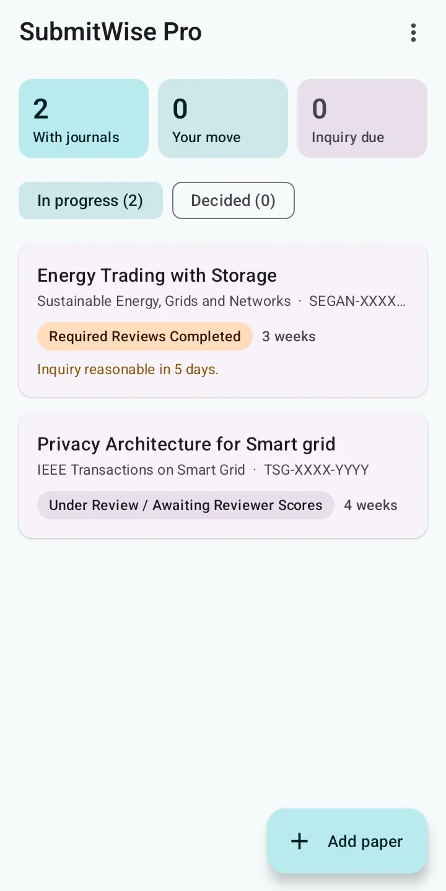
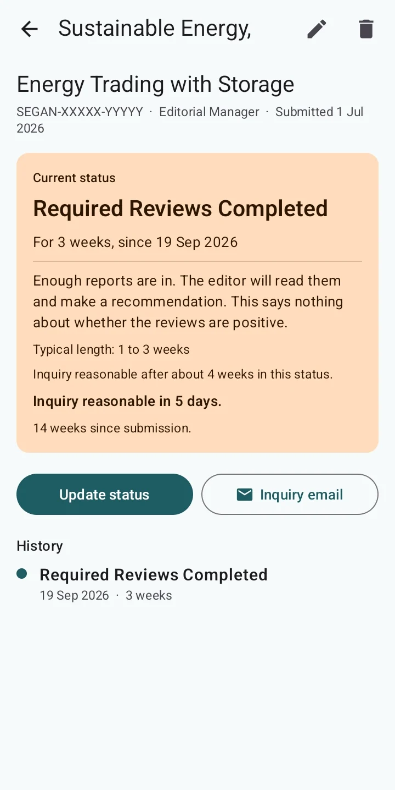
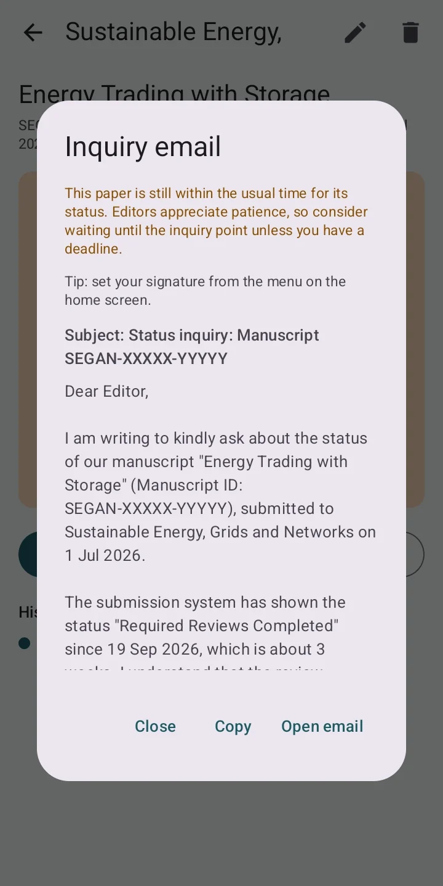

SubmitWise tracks every paper you've submitted, explains what each status means, and tells you when it's time to email the editor.
Free for up to 2 papers in progress. No account, no ads. Your papers never leave your phone.
Real screens from the app. Your papers, what each status means, and the email you'd otherwise spend twenty minutes wording.



Built-in guides for Elsevier Editorial Manager, IEEE and other ScholarOne journals, and a general set for Springer, MDPI, Wiley and the rest. A few examples:
| Status | What it means | Typical | Inquire after |
|---|---|---|---|
| With Editor | An editor is checking scope and quality. Most desk rejections happen here, so moving on is a good sign. | 1 to 3 weeks | 4 weeks |
| Required Reviews Completed | Enough reports are in and the editor is reading them. It says nothing about whether they are positive. | 1 to 3 weeks | 4 weeks |
| Awaiting AE Recommendation | Reports are in and the Associate Editor is writing a recommendation. | 1 to 3 weeks | 4 weeks |
| Reject and Resubmit | Not a final rejection. You can send a substantially revised version as a new submission. | Your move | None |
Times are rough guides from common author experience. Every journal and editor is different.
When a paper passes its usual wait, you get one notification. No chasing too early, no waiting forever.
A polite note with your title, manuscript ID and dates. Copy it or open it in your email app.
Once a week SubmitWise lists papers waiting on journals. Tap "No change", or update the status from a screenshot.
Screenshot your dashboard or the submission email. SubmitWise reads the title, journal, ID, status and dates, on your phone.
About 150 journals built in, searchable by short form. The right status guide is picked for you.
Paste or screenshot the decision email. SubmitWise sets the due date and counts down, with reminders 7, 3 and 1 days before.
Reviewer comments are split into separate points. Tick each one off, write your response, and copy a ready response letter.
Move the paper to the next journal with its whole history. Open review points come with it, so new reviewers don't raise the same issues.
Acceptance rate, time to first decision per journal, desk rejections and time spent in each status, from your own papers.
No account and no server. Papers, reviews and attached files stay on your phone; backups go where you choose.
The free version tracks your papers, explains every status, reminds you when to ask the editor and keeps your reviews. Pro adds the tools that save time at every step.
Ganesh Kumar Pandey is a PhD researcher in Electrical Engineering at IIT Kharagpur, working on smart grids, power systems and AI for the grid. He built SubmitWise after years of watching his own papers sit in Editorial Manager and ScholarOne, wondering whether each status was normal.
Questions, a missing journal, or a timing that feels wrong? Email him.
No. You still check the journal site, then update the status in SubmitWise with two taps. Logging in for you would mean storing your journal password, which is a risk we won't take. The weekly check-in makes keeping it current quick.
Inside the app, through Google Play. Tap "Get SubmitWise Pro" in the menu. It is a one-time purchase, not a subscription.
Sign in with the same Google account and tap Restore in the Pro screen; your purchase comes back. Use Export backup and Import backup to move your papers.
Refunds go through Google Play under its refund policy. If something isn't working, email first and it will be fixed.
Yes. Your papers stay on your phone. There is no account, no analytics and no server. Privacy policy.